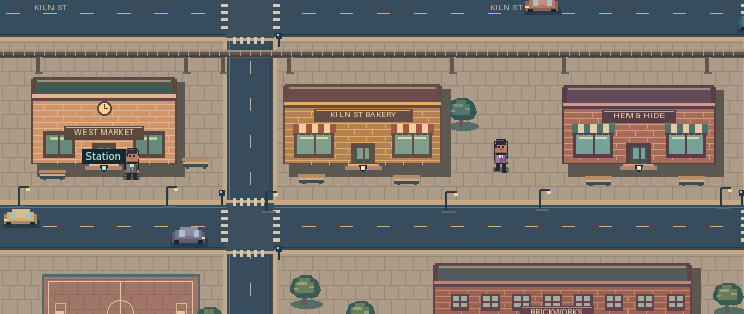

Free downloadable game
Life on a Margin
Build a career, invest through a changing economy and decide how you want to spend the time you earn back.
Release status
Not yet released
Windows is the first target. Verified download links, requirements and install steps will appear here.
See release status
Make a life beyond your first trade
Read the player guide for the planned save-transfer experience.
- In development
- Offline play, local saves and import from a compatible backup exported by The First Trade.
- Verified internally
- An internal desktop save test restored a universe exported from the browser build. See the save and resume development update for the test scope.